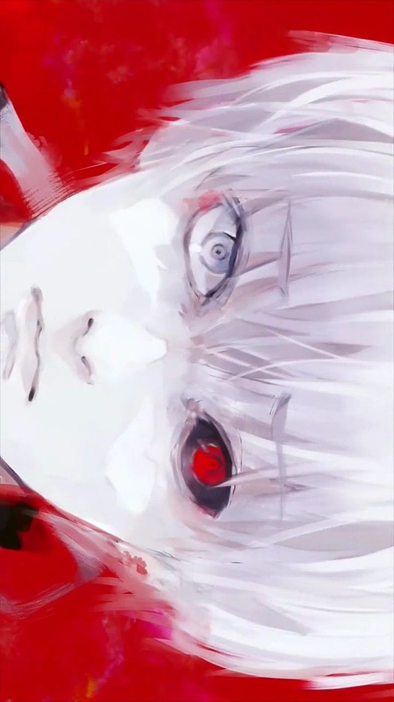
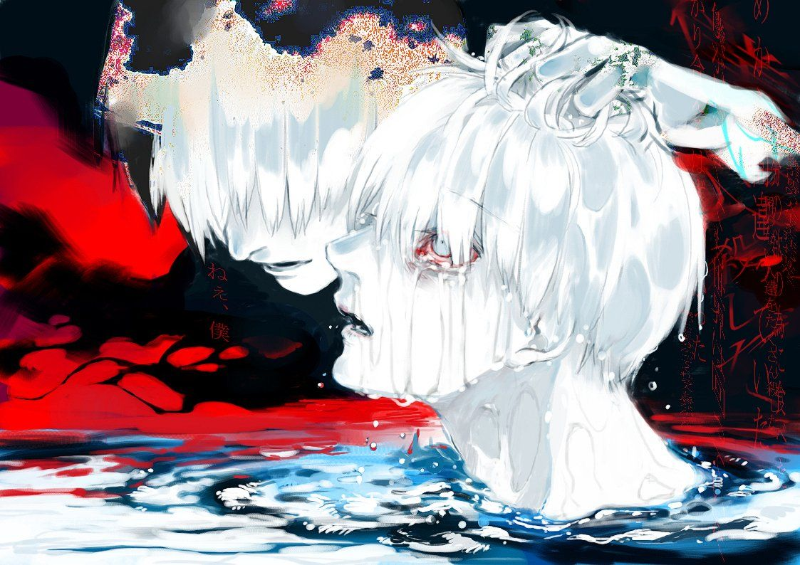
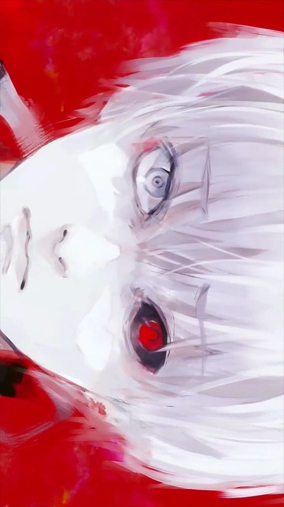
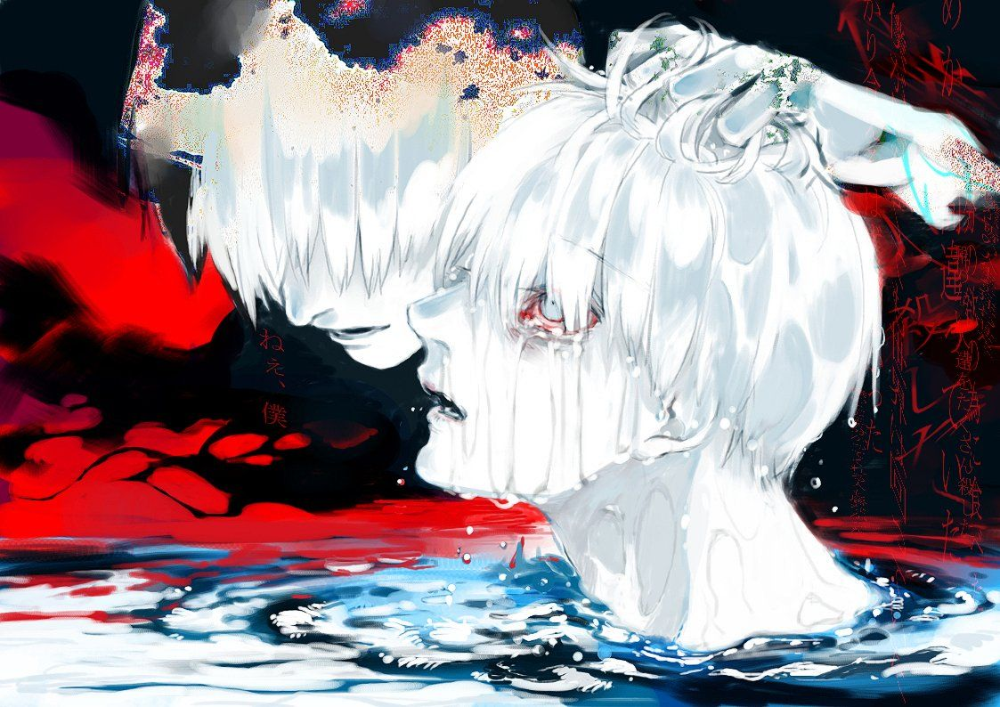

About Kaneki
Kaneki Ken (金カネ木キ 研ケン) is the main protagonist of Tokyo Ghoul. He was once a quiet university student studying Japanese literature at Kamii University before a fateful encounter with Rize Kamishiro turned him into the first known artificial one-eyed ghoul.
Following his transformation, he joined Anteiku and tried to learn how to live as a ghoul. His journey led him to earn the alias Eyepatch and later Centipede after surviving brutal captivity by Aogiri Tree.
Years later, he reemerged as Haise Sasaki, a Ghoul Investigator for the CCG with no memory of his past. Upon regaining his memories, Kaneki took on the title of The Black Reaper, and eventually became the feared and respected One-Eyed King.
He founded the group Goat to unite ghouls and humans, and after the chaos of the Dragon incident, helped bring about peace. Kaneki now lives peacefully with Touka, his wife, and their children.
 


